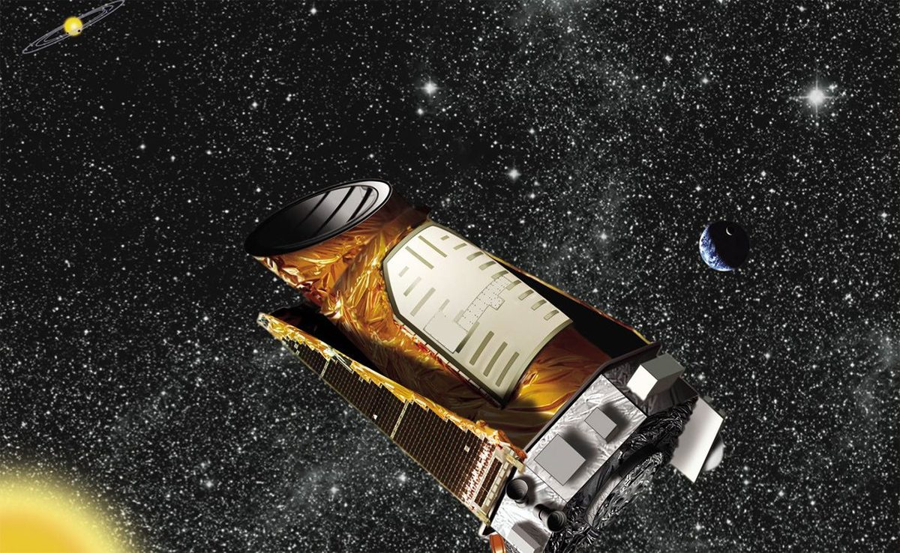

Stars
Stars are the clocks and scales of the Universe: their ages date the history of the Milky Way, and their masses and sizes calibrate much of astronomy. Surveys combining spectroscopy and asteroseismology now measure thousands of red giants, which lets us test the theory of stellar structure and evolution, and improve how we measure stellar masses and ages.

- Stellar Modeling: Testing stellar evolution models against thousands of observed red giant stars.
- Asteroseismology: Stellar oscillations as precise measures of stellar masses and ages, from Kepler to Roman.
All my papers, with what I contributed to each, are on Publications. New to the topic? The Glossary explains the terms in plain language.